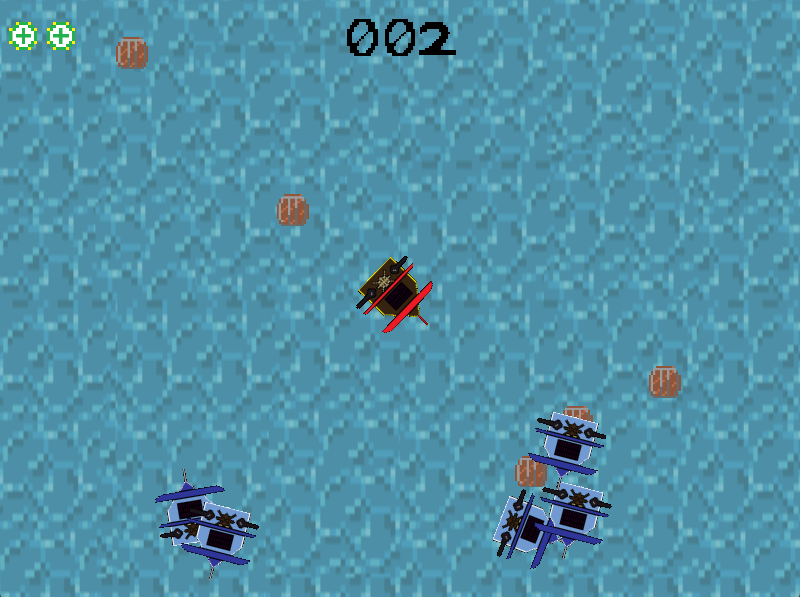

A Pirate's Dream is an immersive top-down adventure game developed using C++ and OpenGL. The game invites players to take control of a pirate ship and embark on thrilling sea battles, exploring vast oceans, and hunting for the ultimate treasure. Players must defeat enemies, conquer challenges, and upgrade their ships to become the most feared pirate in the seven seas.
This project was designed to provide an engaging gameplay experience, utilizing OpenGL for 2D rendering and C++ for implementing game logic. The game mechanics include player movement, enemy AI, boss battles, and a progression system where players can upgrade their ship's weapons and defenses. The game also features an in-depth level system with increasing difficulty to keep players engaged.
Top-Down Combat Gameplay: The game features classic top-down combat mechanics, where players navigate their ship to engage in battles with sea monsters, enemy ships, and powerful bosses. The combat system is designed to be intuitive yet challenging, providing a rewarding experience for players.
Progressive Level Design: Players progress through multiple levels of increasing difficulty, each featuring unique challenges and enemies. This keeps the gameplay fresh and ensures a gradual learning curve for players.
Enemy AI and Boss Battles: The game includes various types of enemy AI, from basic ships to formidable bosses. Each boss battle is uniquely crafted with different attack patterns and special abilities, providing a memorable challenge for players.
Ship Upgrades: Players can collect resources to upgrade their ship's weaponry, armor, and speed. The upgrade system allows players to customize their gameplay strategy, enhancing their ship to take on tougher challenges.
OpenGL Rendering: The game utilizes OpenGL for rendering, providing smooth animations, visually appealing environments, and dynamic visual effects that bring the pirate adventure to life.
